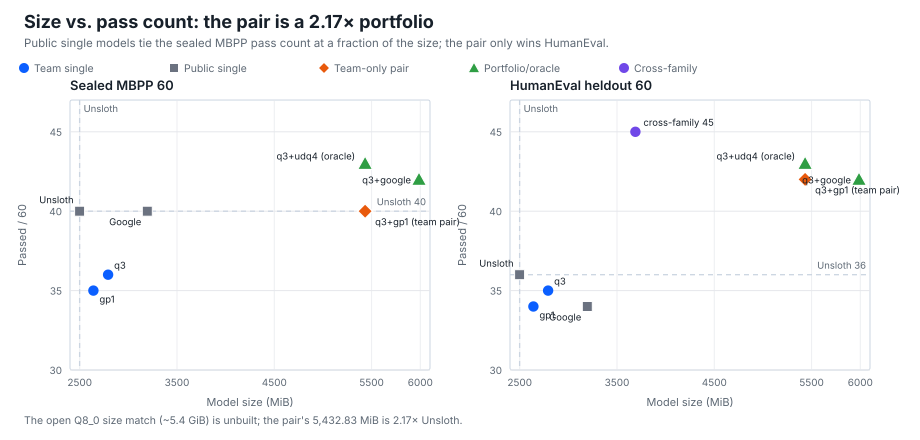
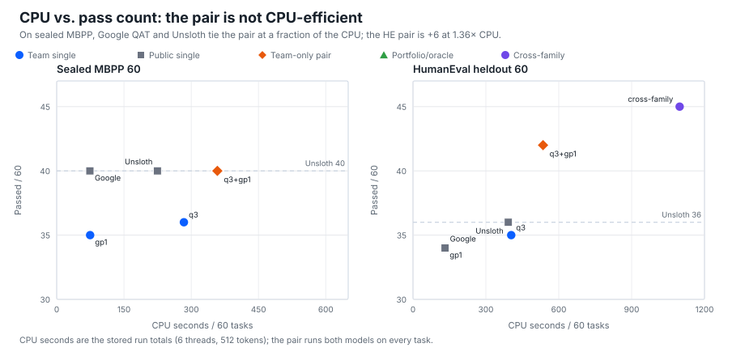
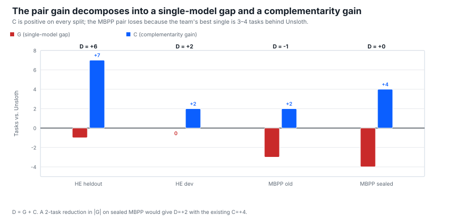
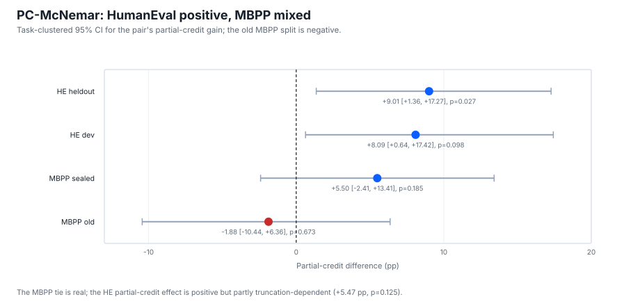

Abstract
Quantization selection is usually driven by weight error or perplexity, but deployment is judged by which tasks a configuration passes. We use the pass set as an audit primitive, then study Gemma E2B against Unsloth UD-Q4. The HumanEval pair is 42/60 vs 36/60 (b=7, c=1, one-sided p=0.0352; partial credit +9.01 pp, p=0.027) at 2.17×; the sealed MBPP is 40/60 vs 40/60 (a real tie); the old MBPP is 34/60 vs 35/60 (a loss); a deterministic repair@1 development result is 44/60 vs 40/60 (b=4, c=0, p=0.0625, post-hoc); a size-matched 2,492.99 MiB model is a dev win (+5, p=0.0898) and heldout near-tie (−2); a cross-family pair is 45/60 vs 36/60 (p=0.0059, 1.476×, HumanEval-only). The contribution is a two-family complementarity audit with D=G+C, a failure-correlation mechanism, and a claim/counter-theory certificate. No size-matched single-model win; no generic repair; no PC@1 win.
1. Introduction
Quantized code models are usually selected by weight error or perplexity, but deployment is judged by which tasks a configuration passes. The pass set stores in 8 bytes (60 tasks) or 10 (80). The prior report-card study used this bitset as an audit artifact: pair/union queries are exact within the observed matrix but do not transfer; the header is a report card, not a selector.
This paper asks whether a team's quantized model can beat a strong public baseline at a declared size. We study Gemma E2B against Unsloth UD-Q4_K_XL (2,498.98 MiB). The team pair wins HumanEval heldout (42/60 vs 36/60, p=0.0352; partial credit +9.01 pp, p=0.027) at 2.17×, ties the sealed MBPP (40/60 vs 40/60), and has a post-hoc repair@1 result (44/60 vs 40/60, p=0.0625). The size-matched 2,492.99 MiB model is a dev win (+5, p=0.0898) and heldout near-tie (−2). A cross-family pair is the strongest p-value (45/60 vs 36/60, p=0.0059) but is HumanEval-only and 1.476×.
The contribution is a two-family complementarity audit: the report card primitive, \(D=G+C\), a failure-correlation mechanism, and a claim/counter-theory ledger. The headline is the HumanEval pair plus the boundary; the next test is the HE-primary Fresh-132.
2. Related Work
GPTQ, AWQ, SpQR, k-quants, AMQ, CompressionBench, LLM-KICK, and ACBench show that weight error and perplexity can miss capability. Yang et al. (2024) use natural-language report cards; our unit is the exact pass set. Li et al. (2024) evaluate aggregate performance, not per-configuration complementarity.
Four lines matter: quantization ensembles/model soups (Wortsman et al., 2022; Lakshminarayanan et al., 2017) for same-base-model complementarity; cascades/selectors (FrugalGPT, 2023; RouteLLM, 2024) for the oracle-vs-deployment gap; non-inferiority (McNemar, 1947; Piaggio et al., 2006) for the near-tie; and QAT vs PTQ (Unsloth UD-Q4_K_XL; Google QAT Q4; imatrix) for the recipe confound.
3. Method
3.1 Audit primitive
For a configuration \(c\), the pass set \(P_c\) is the set of probes it passes under a fixed protocol; the probe passport records the execution. The bitset is 8 bytes for 60 tasks, 10 bytes for 80. Pair/union queries are exact within the observed matrix; the header is not a selector.
3.2 Two-family protocol
The Gemma E2B matrix has five configurations (q3_mix, google_qat_q4_0, gp1_qat_requant, udq4_k_xl, udq2_k_xl) and three splits (HE dev 40, HE heldout 60, MBPP heldout 60). Unsloth UD-Q4_K_XL is 2,498.98 MiB (SHA e531007…). The protocol is temperature 0, context 2048, f16 KV, 512 tokens, 30 s. The 512-token cap is a confound: truncated generations fail on heldout/MBPP/sealed; q3_mix truncates 17/60 vs Unsloth 12/60. The truncation-adjusted upper bound is q3 52, gp1b 49, Unsloth 48.
3.3 Claim ladder and statistics
We use five rungs: L0 within-sample report card; L1 split-half/cross-matrix boundary; L2 fresh-split replication; L3 size-matched single-model win; L4 deployable selector. The exact McNemar endpoint is one-sided team superiority \(p_1=P(\mathrm{Bin}(b+c,0.5)\ge b)\), where \(b\) is team-only and \(c\) is Unsloth-only; the two-sided value is \(p_2=2\min(P(\ge b),P(\le b))\). The paired bootstrap resamples tasks, not tests. For partial credit we run each base assertion and each MBPP+ plus input individually and report the task-clustered CI, sign-flip p, ICC, effective sample size, and cluster-robust McNemar.
p-value arithmetic. For old MBPP (b=4, c=5): \(P(\mathrm{Bin}(9,0.5)\ge4)=382/512=0.7461\); \(P(\le4)=256/512=0.5000\); two-sided 1.0000. For gp1b heldout (b=3, c=5): \(P(\mathrm{Bin}(8,0.5)\ge3)=219/256=0.8555\); \(P(\le3)=93/256=0.3633\); two-sided 0.7266. The paper reports the team endpoint; 0.5000 and 0.3633 are the lower tails in the opposite direction.
3.4 Repair@1
The repair layer is a deterministic operator table applied to every arm: missing_return (123 q3), builtin_shadow with import builtins (126), trailing_demo_strip (308), redundant_block (635 gp1), formula_lookup (135), and predicate_swap (459 q3). Caveats: 126 is two lines; 635's plus suite is all [[]]; gp1 459 still fails; continuation is excluded. The full 197-failure sweep replays 480/480 stored verdicts. On the 66 Gemma-fresh MBPP tasks scored by Qwen, the library fixes 3/118 (2.54%), all formula_lookup on Mbpp/59; this is a Qwen proxy, not a Gemma result.
3.5 Fresh-132 and counter-theory ledger
The 160-task MBPP plan is infeasible. The fresh pool is 68 MBPP + 64 HE = 132, but the 64 HE and 76 MBPP stage2_cal tasks were Qwen-scored on 2026-11-08; strict unseen is 2 MBPP + 0 HE. The only feasible significant fresh claim is HE-primary superiority plus MBPP non-inferiority. At n=132 the 80% MDE is 9.4 pp/12.4 tasks; +2/60 has power 0.120, +6/60 0.859. HE-64 at +6/60 is 57.95% one-sided; the target is ≥+8 (82.8%). MBPP +2/60 is 20.0% one-sided; only +6/60 reaches 92.2%. The NI margin is ≥−8 pp at n=68 or ≥−5 pp at n=132. The counter-theory ledger covers pair size, MBPP noise, split-specificity, oracle/deployment, QAT/PTQ, the 512-token cap, size, Google QAT, weak tests, and release license/DOI.
4. Results
4.1 Audit primitive and boundary
| Evidence | Result |
|---|---|
| Exact header 8 B/60, 10 B/80 | 0.00 regret, 0.0000 MAE, 1.00 top-3; CP@1 0.6376/0.6532; selection coverage 1.000; 31/60 complement contributes 5 unique tasks |
| Split-half | 1.91/1.70 regret, 3.00/3.47 MAE, 0.208/0.079 top-3; config stability 40.5%/41.1% |
| Cross-matrix | 48/80 vs 56/80; 34/60 vs 39/60; KV8 adds 0 |
| CP40 panel | 18/40 vs 17/40 (+1), one-sided p=0.5; MBPP subgroup 0 gain; CP@1 0.4199/0.4190 |
| Gemma transfer | storage exact (5 B/40, 8 B/60); target-best 0/6; regret 1–6; transfer fails |
The report card is exact within-sample, not a selector; the new audit uses it as the measurement unit.
4.2 The Gemma E2B duel
| Arm / pair | Size (MiB) | HE heldout | HE dev | MBPP old | MBPP sealed |
|---|---|---|---|---|---|
| Unsloth UD-Q4_K_XL | 2,498.98 | 36/60 | 29/40 | 35/60 | 40/60 |
q3_mix | 2,792.09 | 35/60 | 25/40 | 30/60 | 36/60 |
gp1_qat_requant | 2,640.74 | 34/60 | 29/40 | 32/60 | 35/60 |
q3+gp1 pair | 5,432.83 (2.17×) | 42/60 | 31/40 | 34/60 | 40/60 |
q3+google pair | 5,986.44 (2.40×) | 42/60 | 33/40 | 36/60 | 42/60 |
Roles. q3_mix, gp1_qat_requant, and gp1b_2498 are team builds; google_qat_q4_0 (Google) and udq4_k_xl (Unsloth) are public baselines. q3+gp1 is the team-only pair; q3+google is a team-led portfolio with a public Google complement.

The sealed pair is a real tie (40/60 vs 40/60, b=4, c=4, one-sided p=0.6367); the old MBPP pair is a loss (34/60 vs 35/60, b=4, c=5, one-sided p=0.7461, two-sided 1.0000); the HumanEval pair is a win (42/60 vs 36/60, b=7, c=1, one-sided p=0.0352, two-sided 0.0703). The non-Unsloth q3+google pair is 42/60 vs 40/60 on sealed (b=4, c=2, p=0.3438, INCONCLUSIVE); q3+udq4 is 43/60 (b=3, c=0, p=0.125); the all-four oracle is 44/60.

4.3 Decomposition \(D=G+C\)
For each split, \(D=P-U=(B-U)+(P-B)=G+C\), where \(U\) is Unsloth, \(B\) the best team single, and \(P\) the pair union.
| Split | U | B | P | G | C | D | Verdict |
|---|---|---|---|---|---|---|---|
| HE heldout 60 | 36 | 35 | 42 | −1 | +7 | +6 | win |
| HE dev 40 | 29 | 29 | 31 | 0 | +2 | +2 | win |
| MBPP old 60 | 35 | 32 | 34 | −3 | +2 | −1 | loss |
| MBPP sealed 60 | 40 | 36 | 40 | −4 | +4 | 0 | tie |
C is positive on all four splits (+2 to +7); G is zero or negative (0 to −4); the pair wins iff C > |G|. The MBPP failure is a single-model-gap failure, not a complementarity failure. The campaign target is to reduce |G| on MBPP by 2 tasks (sealed: −4 → −2 gives D=+2 with C=+4), not to increase C.

4.4 Repair@1 development result
The full sweep gives team pair +4 old / +4 sealed, Unsloth 0/45, Google 0/45; 184/197 failures have no matching operator. The sealed pair is 44/60 vs 40/60, b=4, c=0, p=0.0625; the old pair is 38/60 vs 35/60, b=4, c=1, p=0.1875. The 4/4 requires the import-inclusive builtins.sum guard for Mbpp/126; the 3/4 fallback is 43/60, p=0.1875. The result is post-hoc and operation-specific. The fresh 68-task MBPP panel needs k≥4 repair-only tasks and 0 Unsloth repairs for p<0.10; under the Qwen-proxy rate, expected yield is 1.73 fixes and P(≥4)=9.5%. The 32-task screen ≥+2 has P=19.5%. This is a high-risk confirmation; do not lead with it.
4.5 PC-McNemar: task-family-specific
| Split | Pair binary | Mean paired difference | Task-clustered 95% CI | Sign-flip p | Cluster-robust p |
|---|---|---|---|---|---|
| HE heldout | 42/60 vs 36/60 | +9.0068 pp | [+1.3603, +17.2729] | 0.0268 | 0.0209 |
| HE dev | 31/40 vs 29/40 | +8.0916 pp | [+0.6352, +17.4245] | 0.0977 | 0.0825 |
| MBPP sealed | 40/60 vs 40/60 | +5.4956 pp | [−2.4113, +13.4136] | 0.1851 | 0.1758 |
| MBPP old | 34/60 vs 35/60 | −1.8762 pp | [−10.4350, +6.3644] | 0.6733 | 0.7136 |
The MBPP tie is real on both splits; the MBPP partial-credit claim is dead. The HE effect is positive at both levels; the endpoint is task-family-specific. Truncation exclusion reduces the heldout effect to +5.47 pp, CI [+0.0105, +13.2016], p=0.1249; it survives in direction but is partly truncation-dependent. The high ICC (0.82/0.85) leaves ~71 effective units; the naive test-case p is a clustering artifact.

4.6 Size-matched and cross-family results
gp1b_2498 is 2,492.99 MiB, 6 MiB smaller than Unsloth. Dev: 34/40 vs 29/40, b=7, c=2, p=0.0898, bootstrap CI (−1, 11). Heldout: 34/60 vs 36/60, b=3, c=5, one-sided p=0.8555, two-sided 0.7266, CI (−8, 3); 15/60 truncations, truncation-adjusted upper bound 49 vs 48. MBPP partial: 17/32 vs 20/32. This is a dev win + heldout near-tie, not a heldout win; the MBPP axis is worse. At matched pass count on sealed MBPP, the single google_qat_q4_0 model ties the pair (40/60) at 3,194.35 MiB and 74.06 s vs the pair's 5,432.83 MiB and 358.19 s; the pair is a portfolio result, not a single-agent win. Appendix G of the release document reports the full matched-resource table.
The cross-family gp1_2629 + q5ks_none pair is 45/60 vs 36/60, b=10, c=1, p=0.0059, at 1.476×. The Gemma arm is 34/60, the Qwen arm 33/60; the union has 11+12 unique tasks. Both individually lose to Unsloth (34 and 33 vs 36); the pair wins by +9. It is HumanEval-only and 1.476×; a secondary portfolio result, not a size-matched single model.
4.7 Failure correlation and headroom
The four-arm regression (24 points) gives Spearman(pass correlation, C) = −0.8095: higher failure correlation goes with lower pair gain. The q3/gp1 MBPP pair is the high-correlation/low-gain case; q3/google and q3/udq4 are lower-correlation/higher-gain; gp1/google is the extreme.
Headroom capture (pair union − Unsloth)/(oracle − Unsloth): team-only q3+gp1 is 33% dev, 75% heldout, −20% old MBPP, 0% sealed; q3+google is 67%/75%/20%/50%; q3+udq4 is 33%/88%/40%/75%. The team-only pair is never the best capture; the constraint costs 2 tasks on dev, sealed, and old MBPP.
4.8 Fresh-132 power
The fresh pool is 68 MBPP + 64 HE = 132, but the 64 HE and 76 MBPP stage2_cal tasks were Qwen-scored; strict unseen is 2 MBPP + 0 HE. HE-64 at +6/60 is 57.95% one-sided; the target is ≥+8 (82.8%). MBPP +2/60 is 20.0% one-sided. The NI margin is −8 pp at n=68 or −5 pp at n=132. The only feasible significant fresh claim is HE-primary + MBPP non-inferiority, on a genuinely unseen or campaign-fresh panel.
5. Discussion
The audit has a clear practical reading. On sealed MBPP, the pair is not a better single agent: Google QAT and Unsloth tie 40/60 at 3,194/2,499 MiB and 74/225 s, while the pair uses 5,433 MiB and 358 s. On HumanEval, the pair is +6 over Unsloth, but at 2.17× size and 1.36× CPU; the single Unsloth is more pass/CPU-efficient (0.0917 vs 0.0785). The pair is a portfolio, not a size- or CPU-matched single-model win. The D=G+C decomposition explains why: C is positive on every split, but the MBPP single-model gap G is −3/−4. The next tests are a size-matched Q8_0 (~5.4 GiB) and a CPU-matched q3/Unsloth at 1024 tokens; the current pair fails the ≤1.1× size/CPU rule.
| Worked | Did not work / not claimed |
|---|---|
| Exact pass-set audit (8 B/60, 10 B/80); HE pair 42/60 vs 36/60; D=G+C; failure correlation −0.81; matched resources | Size-matched single-model win; generic repair; PC@1 win; team-only portfolio win; cross-family MBPP; fresh panel from Qwen-used tasks; matched-size build >40/60 |
6. Limitations and claims not made
The panels are 60 tasks (40 dev); the 512-token cap is a confound; the QAT/PTQ confound is explicit; the repair is post-hoc and operation-specific; the PC@1 is split-specific; the Fresh-132 is Qwen-used; the pair is 2.17×; the cross-family pair is HumanEval-only. The 126 repair needs import builtins; the 635 plus suite is all [[]]; gp1 Mbpp/459 still fails. Claims not made: no size-matched single-model win at ≤2,499 MiB; no PC@1 win; no generic repair; no team-only portfolio win; no cross-family MBPP; no fresh-panel result from the Qwen-used 132; no matched-size build win; no SOTA/compression/Pareto claim; no out-of-sample exactness.
7. Conclusion
The report card is exact within-sample (8 B/60, 10 B/80; 0.00 regret, 0.0000 MAE, 1.00 top-3; CP@1 0.6376/0.6532; the 31/60 complement contributes 5 unique tasks). It does not transfer: split-half, cross-matrix, KV8, CP40, and Gemma fail. The report card is an audit artifact, not a selector.
The two-family audit shows a real HumanEval complementarity: 42/60 vs 36/60 (b=7, c=1, one-sided p=0.0352; partial credit +9.01 pp, p=0.027) at 2.17×; the sealed MBPP is a real tie (40/60 vs 40/60); the repair@1 development result is 44/60 vs 40/60 (b=4, c=0, p=0.0625, post-hoc); the size-matched gp1b is a dev win (+5, p=0.0898) and heldout near-tie (−2); the cross-family pair is 45/60 vs 36/60 (p=0.0059, 1.476×, HumanEval-only). The best public claim is the HumanEval pair plus the boundary; the next test is the HE-primary Fresh-132; the repair is a high-risk secondary; there is no size-matched single-model win.
Data and code availability
Public release: behavioral-report-cards (v1.1.0). Individual pass matrices, task IDs, and sanitized summaries: evidence/gemma-audit. Report-card manifest and demo: data/pass-set-header, data/report-card. Full release document: FINAL_PAPER_RELEASE_V1.md. Model: Hugging Face.
Reproducibility
Verify the release with cd evidence/gemma-audit && sha256sum -c SHA256SUMS and the top-level sha256sum -c SHA256SUMS; the report-card demo is python data/report-card/report_card.py --help. The paper's numbers are from the stored JSONLs; no new scored run was used.
References
- Frantar, E., Ashkboos, S., Hoefler, T., Alistarh, D. GPTQ: Accurate Post-Training Quantization for Generative Pre-trained Transformers. arXiv:2210.17323. https://arxiv.org/abs/2210.17323
- Lin, J., Tang, J., Tang, H., Yang, S., Dang, X., Gan, C., Han, S. AWQ: Activation-aware Weight Quantization for On-Device LLM Compression and Acceleration. arXiv:2306.00978. https://arxiv.org/abs/2306.00978
- Dettmers, T., Svirschevski, R., Egiazarian, V., Kuznedelev, D., Frantar, E., Ashkboos, S., Borzunov, A., Hoefler, T., Alistarh, D. SpQR: A Sparse-Quantized Representation for Near-Lossless LLM Weight Compression. arXiv:2306.03078. https://arxiv.org/abs/2306.03078
- Lee, S., Woo, S., Jin, J., Lee, C., Park, E. AMQ: Enabling AutoML for Mixed-precision Weight-Only Quantization of Large Language Models. EMNLP 2025. arXiv:2509.12019. https://arxiv.org/abs/2509.12019
- Zhong, X., Li, Z., Wang, Z., Feng, X., Liu, Y., Yang, S., Zhou, Y., Li, Z., Chen, Z., Chen, B. CompressionBench: How can your coding agents compress LLMs? arXiv:2611.06858. https://arxiv.org/abs/2611.06858
- Jaiswal, A., Gan, Z., Du, X., Zhang, B., Wang, Z., Yang, Y. Compressing LLMs: The Truth is Rarely Pure and Never Simple (LLM-KICK). ICLR 2024. arXiv:2310.01382. https://arxiv.org/abs/2310.01382
- Dong, P., Tang, Z., Liu, X., Li, L., Chu, X., Li, B. Can Compressed LLMs Truly Act? An Empirical Evaluation of Agentic Capabilities in LLM Compression (ACBench). ICML 2025. arXiv:2505.19433. https://arxiv.org/abs/2505.19433
- Liu, J., Xia, C. S., Wang, Y., Zhang, L. Is Your Code Generated by ChatGPT Really Correct? Rigorous Evaluation of Large Language Models for Code Generation (HumanEval+). arXiv:2305.01210. https://arxiv.org/abs/2305.01210
- Jimenez, C. E., Yang, J., Wettig, A., Yao, S., Pei, K., Press, O., Narasimhan, K. SWE-bench: Can Language Models Resolve Real-World GitHub Issues? arXiv:2310.06770. https://arxiv.org/abs/2310.06770
- Yang, B., Cui, F., Paster, K., Ba, J., Vaezipoor, P., Pitis, S., Zhang, M. R. Report Cards: Qualitative Evaluation of Language Models Using Natural Language Summaries. arXiv:2409.00844. https://arxiv.org/abs/2409.00844
- Li, S., Ning, X., Wang, L., Liu, T., Shi, X., Yan, S., Dai, G., Yang, H., Wang, Y. Evaluating Quantized Large Language Models. ICML 2024, PMLR 235:28480–28524. arXiv:2402.18158. https://arxiv.org/abs/2402.18158
- Wortsman, M., Ilharco, G., Gadre, S. Y., Roelofs, R., Gontijo-Lopes, R., Morcos, A. S., Namkoong, H., Farhadi, A., Carmon, Y., Kornblith, S., Schmidt, L. Model Soups: Averaging Weights of Multiple Fine-tuned Models Improves Accuracy without Increasing Inference Time. ICML 2022. arXiv:2203.05482. https://arxiv.org/abs/2203.05482
- Lakshminarayanan, B., Pritzel, A., Blundell, C. Simple and Scalable Predictive Uncertainty Estimation using Deep Ensembles. NeurIPS 2017. arXiv:1612.01474. https://arxiv.org/abs/1612.01474
- Chen, L., Zaharia, M., Zou, J. FrugalGPT: How to Use Large Language Models While Reducing Cost and Improving Performance. 2023. arXiv:2305.05176. https://arxiv.org/abs/2305.05176
- Ong, I., et al. RouteLLM: Learning to Route LLMs with Preference Data. 2024. arXiv:2406.18665. https://arxiv.org/abs/2406.18665
- McNemar, Q. Note on the sampling error of the difference between correlated proportions or percentages. Psychometrika 12(2):153–157, 1947. https://doi.org/10.1007/BF02295996
- Piaggio, G., Elbourne, D. R., Pocock, S. J., Evans, S. J. W., Altman, D. G. Reporting of noninferiority and equivalence randomized trials: an extension of the CONSORT statement. JAMA 295(10):1152–1160, 2006. https://doi.org/10.1001/jama.295.10.1152
- Gemma 4 E2B technical report/model card, 2026. Artifact
gemma-4-E2B-it-qat-UD-Q4_K_XL.gguf, SHAe531007…. - Unsloth UD-Q4_K_XL model card (2,498.98 MiB; SHA
e531007…); Google Gemma QAT Q4 (3,194.35 MiB); llama.cpp imatrix calibration.
Appendix A — Claim ladder
| Rung | Claim | Evidence | Status |
|---|---|---|---|
| L0 | Within-sample report card / exact header | 8 B/60, 10 B/80; 0.00 regret, 0.0000 MAE, 1.00 top-3; best pair 41/60, 56/80; 31/60 complement contributes 5 | supported |
| L1 | Split-half / cross-matrix boundary | 1.91/1.70 regret, 3.00/3.47 MAE, 0.208/0.079 top-3; 48/80 vs 56/80; 34/60 vs 39/60; Gemma target-best 0/6 | supported (negative) |
| L2 | Fresh-split pair replication | Sealed 60: 40/60 vs 40/60, b=4, c=4, p=0.6367, CI (−6, 6); q3+google 42/60, b=4, c=2, p=0.3438 | failed / inconclusive |
| L3 | Size-matched single-model win | gp1b_2498 2,492.99 MiB: dev 34/40 vs 29/40 (+5, p=0.0898); heldout 34/60 vs 36/60 (−2, p=0.8555 one-sided / 0.7266 two-sided) | not achieved |
| L4 | Deployable selector | LOTO AUC 0.5612; Gemma target-best 0/6; no selector transfers | not achieved |
Appendix B — Counter-theory ledger
| # | Counter-theory | Evidence | Verdict |
|---|---|---|---|
| 1 | The pair is not a single model | Pair 5,432.83 MiB = 2.17×; single models 2,640.74–2,792.09 MiB; gp1b 2,492.99 MiB | Addressed by labeling the pair an oracle complementarity bound |
| 2 | MBPP +2 is noise | b=4, c=2, p=0.3438, CI (−3, 7) | Addressed: do not claim a win from 60 tasks |
| 3 | The pair advantage is split-specific | Old c-set and sealed c-set share only one task | Addressed by the transfer-boundary claim |
| 4 | The pair is an oracle; you cannot deploy it | LOTO AUC 0.5612; Gemma target-best 0/6; selector gap = the entire C | Addressed: the pair is an oracle upper bound |
| 5 | QAT vs PTQ confound | Unsloth is QAT-derived; q3 is PTQ; gp1 is a QAT requant | Partially addressed; recipe-scoped |
| 6 | The 512-token cap is a confound | q3 17/60, gp1b 15/60, Unsloth 12/60 truncations on heldout; 3 of 4 sealed c-tasks are q3 truncations | Addressed by the truncation audit; the 1024 re-test is the missing piece |
| 7 | Size explains the win | gp1b 2,492.99 MiB is 6 MiB smaller; dev +5, heldout −2 | Addressed by the size-matched gp1b claim |
| 8 | Google QAT is not yours | q3+google 42/60 sealed (+2, p=0.344); q3+gp1 40/60 | Addressed by labeling it a team-led portfolio with Google QAT |
| 9 | The tests are weak | CP@1 false-pass 18/269 = 6.69% [4.01, 10.37], 21/305 = 6.89%; private 202/202; LB 0.982 | Partially addressed; CP@1 is a lower bound |
| 10 | The release is not citable/reusable | Public release main/tag v1.1.0; source private/404; DOI pending | License resolved (CC BY 4.0 + MIT); DOI pending |
Appendix C — Pre-registration certificate
| Claim | Pre-registration | Falsification |
|---|---|---|
| Repair@1 | Frozen operator table (missing_return, builtin_shadow + import builtins, trailing_demo_strip, redundant_block, formula_lookup, predicate_swap); same library to all arms; 68 campaign-fresh MBPP; primary fixes(team) − fixes(Unsloth); 32-task futility screen ≥+2 | Differential ≤0; Unsloth fixes ≥ team fixes; fresh-panel direction disagrees |
| HE-primary Fresh-132 | 64 HE + 68 MBPP campaign-fresh; HE one-sided superiority at α=0.05; target ≥+8 tasks; MBPP non-inferiority gate −8 pp at n=68 or −5 pp at n=132; size ≤2,498.98 MiB | HE effect <+6; MBPP lower bound below the gate; size >2,498.98; panel not fresh |
| PC@1 | Secondary partial-credit endpoint; task-clustered CI, sign-flip p, ICC/n_eff, cluster-robust McNemar; pass@1 reported alongside | CI includes 0; ICC >0.8; test-case direction disagrees with task-level |
Appendix D — Artifact manifest
evidence/gemma-audit/ contains 23 hashed files: README.md, sealed60_analysis.json, sealed60_analysis.md, four pass matrices (pass_matrix_{sealed60,old60,he_dev40,he_heldout60}.csv), four task-ID files, eight sanitized summaries, repair_summary.json, pc_mcnemar_summary.json, fresh132_summary.json, cross_family_summary.json, and SHA256SUMS. It contains no raw model completions or model weights. The folder is public at tag v1.1.0; DOI is pending.
Verify:
cd evidence/gemma-audit && sha256sum -c SHA256SUMSAppendix E — Release checklist
| Item | Status |
|---|---|
| Paper body ≤3,000 words | pass (2,989 stricter / 2,694 whitespace) |
| Title and naming | pass (two-family complementarity audit; no campaign codename) |
| p-value one-sided/two-sided reporting | pass (fractions reported; both tails explicit) |
| Public aggregate evidence | pass in working tree (evidence/gemma-audit/) |
| License | pass (CC BY 4.0 evidence/paper; MIT code; Apache-2.0 weights) |
| DOI | pending |
| Commit/tag/push | pending |
| HF model | live (AntonROSSO/qwen2.5-coder-1.5b-mx2-aq6-q3ks) |
| Checksums | paper SHA-256 and evidence/gemma-audit/SHA256SUMS recorded |
Appendix F — Reproducibility
# Evidence checksums
cd evidence/gemma-audit && sha256sum -c SHA256SUMS
# Report-card demo (see --help for the exact CLI)
python data/report-card/report_card.py --help
# Manifest checksums
cd data/pass-set-header && sha256sum -c SHA256SUMSAppendix G — Matched size and CPU comparison (pair vs single model)
The pair's sealed-60 CPU is 358.19 s (q3 283.63 + gp1 74.56) at 5,432.83 MiB; its HE-60 CPU is 535.20 s (q3 404.17 + gp1 131.03). The existing single-model baselines:
| Arm | Size (MiB) | Sealed pass | Sealed CPU s | HE pass | HE CPU s | Size vs pair | CPU vs pair |
|---|---|---|---|---|---|---|---|
| Pair q3+gp1 | 5,432.83 | 40/60 | 358.19 | 42/60 | 535.20 | 1.00 | 1.00 |
| q3 | 2,792.09 | 36/60 | 283.63 | 35/60 | 404.17 | 0.51 | 0.79 / 0.76 |
| gp1 | 2,640.74 | 35/60 | 74.56 | 34/60 | 131.03 | 0.49 | 0.21 / 0.24 |
| google_qat_q4_0 | 3,194.35 | 40/60 | 74.06 | 34/60 | 132.09 | 0.59 | 0.21 / 0.25 |
| Unsloth UD-Q4 | 2,498.98 | 40/60 | 224.67 | 36/60 | 392.39 | 0.46 | 0.63 / 0.73 |
| gp1b_2498 | 2,492.99 | — | — | 34/60 | 391.28 | 0.46 | — / 0.73 |
| cross-family gp1_2629+q5ks_none | 3,688.57 | — | — | 45/60 | 1,097.70 | 0.68 | — / 2.05 |
| Q8_0 (unbuilt, estimated) | ~5.4 GiB | — | — | — | — | ~1.00 | ~1.2 |
Size match. The pair is 5,432.83 MiB. The existing single models are 2,492.99–3,194.35 MiB (0.46–0.59×); the BF16 is 8,879.95 MiB (1.63×). A Q8_0 at ~5.4 GiB is the natural size match, but it is not built.
CPU match. The pair's sealed CPU is 358.19 s; the closest existing single is q3 at 283.63 s (0.79×) or Unsloth at 224.67 s (0.63×). The pair's HE CPU is 535.20 s; the closest single is q3 at 404.17 s (0.76×) or Unsloth at 392.39 s (0.73×). No exact match.
Verdict. On sealed MBPP, the pair is not better than a single model: google and Unsloth both pass 40/60 at 3,194.35/2,498.98 MiB and 74.06/224.67 s vs the pair's 5,432.83 MiB and 358.19 s. Google is 4.8× more pass/CPU-second and 1.7× smaller for the same pass count. On HE heldout, the pair is +6 over Unsloth (42 vs 36) but at 2.17× size and 1.36× CPU; the pair's pass/CPU is 0.0785 vs Unsloth 0.0917 (14% less efficient). The pair is a portfolio result, not a single-agent win. The missing baselines are a single Q8_0 at 512 tokens (size match) and a single q3/Unsloth at 1024 tokens (CPU match); the truncation-adjusted single q3 upper bound is 52, so the HE gap may close.
Decision rule. The pair is worth deploying over a single model only if it beats the best single baseline by ≥+2 net tasks at ≤1.1× size and ≤1.1× CPU. The current pair fails the size/CPU criterion. If "single agental" means a tool-using agent, the existing data has no agentic benchmark; the V12 REPO-COMP-40 design is the appropriate test, and the pair is an ensemble, not an agent.
Release notes (v1.1.0)
- New title and focus: the pass-set report card is an audit primitive; the two-family complementarity audit is the contribution.
- Paper body 2,694 words by whitespace (2,989 by the stricter counter); under 3,000; release metadata and appendices are outside the paper body.
- Added Figures 1–4, repo/HF links, data/code availability, reproducibility, the matched-resource discussion, and the "what worked / what did not" table.
- The old-MBPP and gp1b-heldout p-values are reported with exact fractions and both one-sided and two-sided values. The one-sided team endpoints are 0.7461 and 0.8555; the complementary lower tails are 0.5000 and 0.3633.
- Aggregate Gemma audit evidence added under
evidence/gemma-audit/; no raw completions. - License corrected to CC BY 4.0 (evidence/paper) and MIT (code); weights Apache-2.0.
- Honest headline: HumanEval pair 42/60 vs 36/60 at 2.17× plus the sealed MBPP tie; no size-matched single-model win; no generic repair; no PC@1 win.
Citation
Project Syntactic / architect-predictor team. Pass-Set Complementarity in Quantized Code Models: A Two-Family Audit with Size and Transfer Boundaries. Final paper draft v1, 2026. https://github.com/antonrosso34-maker/behavioral-report-cards
License
CC BY 4.0 (evidence/paper); MIT (code); Apache-2.0 (model weights). Raw completions and model weights are not included.
Contact
Project Syntactic / architect-predictor team. Repository issues: https://github.com/antonrosso34-maker/behavioral-report-cards/issues